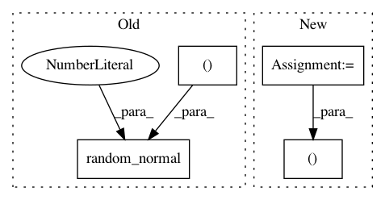

0ba6d95e768eb7a0d74a6fda3ea893e7fb2d7a67,examples/variational_autoencoder.py,,sampling,#Any#,34
Before Change
def sampling(args):
z_mean, z_log_var = args
epsilon = K.random_normal(shape=(K.shape(z_mean)[0], latent_dim), mean=0.,
stddev=epsilon_std)
return z_mean + K.exp(z_log_var / 2) * epsilon
// note that "output_shape" isn"t necessary with the TensorFlow backend
z = Lambda(sampling, output_shape=(latent_dim,))([z_mean, z_log_var])
After Change
z_mean, z_log_var = args
batch = K.shape(z_mean)[0]
dim = K.int_shape(z_mean)[1]
// by default, random_normal has mean=0 and std=1.0
epsilon = K.random_normal(shape=(batch, dim))
return z_mean + K.exp(0.5 * z_log_var) * epsilon
In pattern: SUPERPATTERN
Frequency: 3
Non-data size: 4
Instances
Project Name: keras-team/keras
Commit Name: 0ba6d95e768eb7a0d74a6fda3ea893e7fb2d7a67
Time: 2018-05-10
Author: rowel.atienza@gmail.com
File Name: examples/variational_autoencoder.py
Class Name:
Method Name: sampling
Project Name: keras-team/keras
Commit Name: 0ba6d95e768eb7a0d74a6fda3ea893e7fb2d7a67
Time: 2018-05-10
Author: rowel.atienza@gmail.com
File Name: examples/variational_autoencoder_deconv.py
Class Name:
Method Name: sampling
Project Name: reinforceio/tensorforce
Commit Name: 208e5d91d7f88cc1ab10ab1a4bfdd856b2691671
Time: 2017-05-22
Author: aok25@cl.cam.ac.uk
File Name: tensorforce/core/distributions/gaussian.py
Class Name: Gaussian
Method Name: create_tf_operations